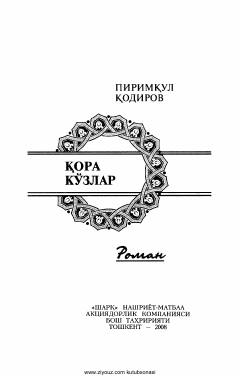

QKPirimqul Qodirov qalamiga mansub ta'sirli va hayotiy roman.
Pirimqul Qodirovning ushbu romani insoniy tuyg'ular, tabiat va hayotiy sinovlar haqida hikoya qiladi. Asar voqealari Turkiston tabiati fonida yosh yigitning hayotiy qarashlari va atrof-muhit bilan munosabatlari orqali ochib beriladi.